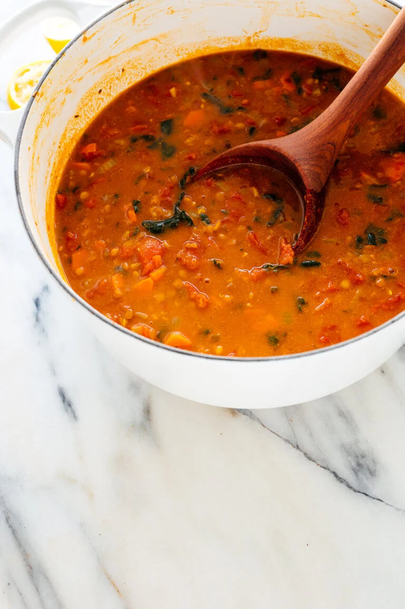
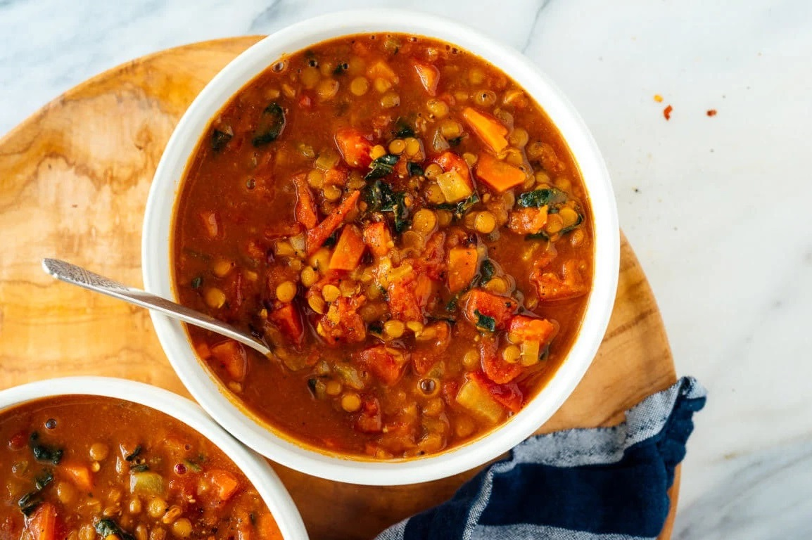

Lentil Soup

Ingredients:
- 1 medium yellow or white onion, chopped
- 2 carrots, peeled and chopped
- 4 garlic cloves, pressed or minced
- 2 teaspoons ground cumin
- 1 large can (28 ounces) diced tomatoes, lightly drained
- 1 cup brown or green lentils, picked over and rinsed
- 1 teaspoon chipotle powder or smoked hot paprika
- 1 cup chopped fresh collard greens or kale, tough ribs removed
- 1 to 2 tablespoons lemon juice (½ to 1 medium lemon), to taste
Instructions:
- Warm the olive oil in a large Dutch oven or pot over medium heat.
One-fourth cup olive oil may seem like a lot, but it adds a lovely
richness and heartiness to this nutritious soup.
- Once the oil is shimmering, add the chopped onion and carrot and
cook, stirring often, until the onion has softened and is turning
translucent, about 5 minutes.
- Add the garlic, cumin, curry powder and thyme. Cook until
fragrant while stirring constantly, about 30 seconds. Pour in the
drained diced tomatoes and cook for a few more minutes, stirring
often, in order to enhance their flavor.
- Pour in the lentils, broth and the water. Add 1 teaspoon salt
and a pinch of red pepper flakes. Season generously with freshly
ground black pepper. Raise heat and bring the mixture to a boil,
then partially cover the pot and reduce the heat to maintain a
gentle simmer. Cook for 25 to 30 minutes, or until the lentils are
tender but still hold their shape.
- Transfer 2 cups of the soup to a blender. Securely fasten the
lid, protect your hand from steam with a tea towel placed over the
lid, and purée the soup until smooth. Pour the puréed soup back
into the pot. (Or, use an immersion blender to blend a portion of
the soup.)
- Add the chopped greens and cook for 5 more minutes, or until the
greens have softened to your liking. Remove the pot from the heat
and stir in 1 tablespoon of lemon juice. Taste and season with
more salt, pepper and/or lemon juice until the flavors really sing.
For spicier soup, add another pinch or two of red pepper flakes.
